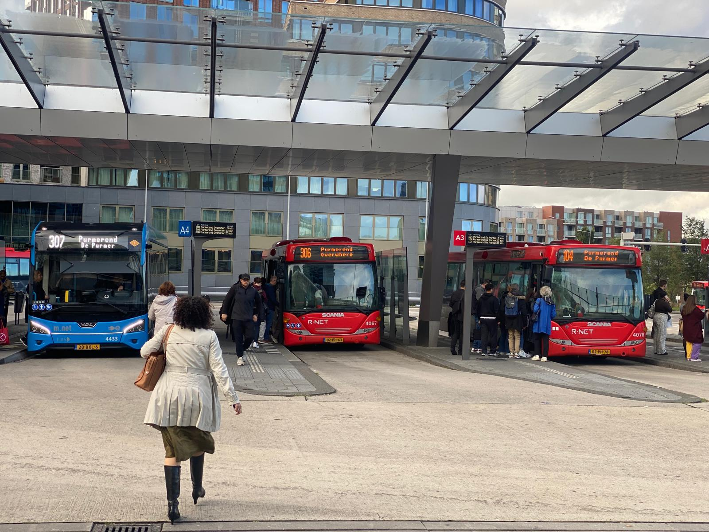
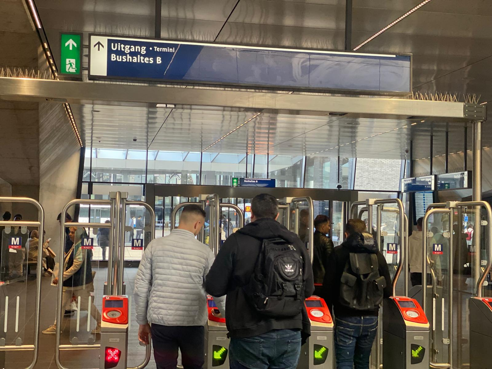

Buses are an easy and convenient way to travel around Noord and beyond. With many routes available, buses connect you to key locations such as tourist attractions, shopping centers, parks, and even ferry terminals for easy access to other parts of Amsterdam. They run frequently, so you won’t have to wait long, making it simple to plan your day without worrying about missing a ride. The buses are also equipped with comfortable seating and clear signs, so it’s easy to know when your stop is coming up. Buses are a reliable, budget-friendly option for everyone, whether you're a local resident or a tourist exploring the area. Plus, using the bus is a great way to see more of the city while reducing your environmental footprint.
HOw to get around Amsterdam Noord

Amsterdam Noord Platform A bus station
How to board the bus:
Right from the Amsterdam metro station, you will see a sign that says UITGANG, which means EXIT. Walk down the stairs to the bus station, and remember to check out with the card you used to check-in.
There are two platforms, A and B. With the help of Google Maps , the NS app, 9292 app or the Tv screen that displays the busses and the route they are going with the time of arrival then you can see which bus will take you to your destination.

Amsterdam Noord Platform B bus station
How to stop at your destination:
when you board the bus you need to monitor the TV screen on the bus, your NS app or 9292 app that displays the next bus stop and also check your map too, you should press the stop button on the bus after the last bus stop to your bus stop to let the driver stop when it gets to your bus station. also remember to check out.
This link takes you to the GVB Bus time table, where you can check your bus routes..
This website uses cookies to ensure you get the best experience.